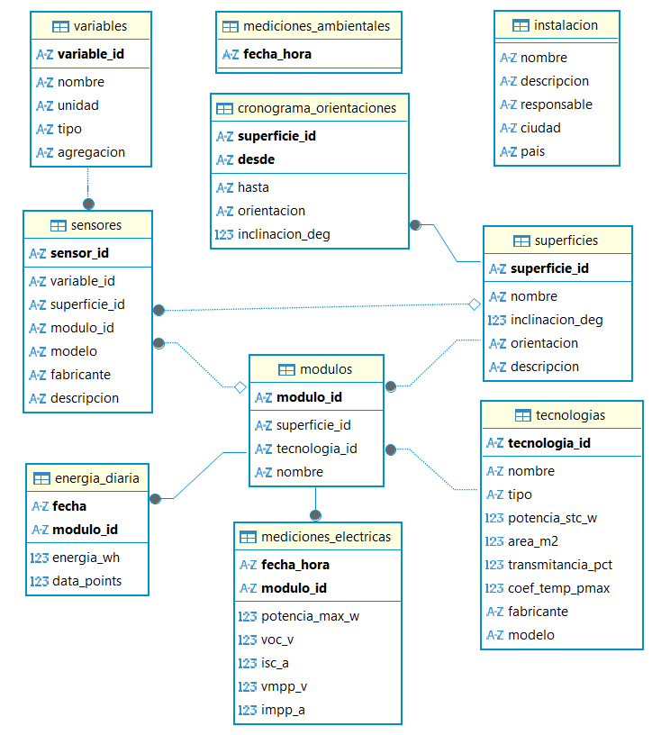

Guía para preparar la base de datos de una instalación fotovoltaica: estructura, contenido de cada tabla, procedimiento de llenado y un ejemplo completo.
En la pestaña Tus datos, describe tu instalación en el formulario. Se descarga un archivo .db con todas las tablas listas.
Copia tus datos en las tablas de mediciones con Python o con DB Browser for SQLite (páginas 7 y 8).
Súbela en Tus datos. Se revisa, se procesa y se visualiza en las pestañas Clima, Energía, Desempeño y Explorar.
| 2 | Estructura de la base de datos |
| 3–6 | Descripción de las tablas |
| 7 | Llenado de la plantilla con Python |
| 8 | Llenado de la plantilla con DB Browser for SQLite |
| 9–10 | Ejemplo de una base completa |
La base de datos es un archivo SQLite con diez tablas. Siete describen la instalación y se llenan una sola vez; las tres restantes contienen las mediciones. Las tablas se relacionan mediante códigos definidos por el usuario, como techo o M1.

Cada línea une una columna con la tabla donde se define su código: el punto se ubica en la tabla que usa el código. La tabla mediciones_ambientales no presenta líneas porque se relaciona con sensores mediante el nombre de sus columnas: cada columna corresponde a un sensor_id. Del mismo modo, las columnas de mediciones_electricas corresponden a variables de tipo eléctrico de la tabla variables. La plataforma verifica ambas relaciones al cargar la base.
Para cada tabla se indica su propósito y el contenido de sus columnas. ● obligatoria · ○ opcional.
_id) se escriben con letras sin tilde, números y guion bajo (fachada_sur), y de forma idéntica en todas las tablas, incluidas mayúsculas y minúsculas.AAAA-MM-DD HH:MM:SS, en hora local; las fechas solas, AAAA-MM-DD.variables.voc_v, isc_a, vmpp_v e impp_a se agregan cuando se necesiten.Datos generales del proyecto. Contiene una sola fila.
| Columna | Tipo | Descripción | |
|---|---|---|---|
| nombre | texto | ● | Nombre de la instalación que se muestra en la plataforma. |
| descripcion | texto | ○ | Descripción breve del proyecto. |
| responsable | texto | ○ | Grupo o entidad a cargo. |
| ciudad, pais | texto | ○ | Ubicación general. |
Una fila por cada tipo de módulo. La potencia STC y el área se usan para calcular la eficiencia.
| Columna | Tipo | Descripción | |
|---|---|---|---|
| tecnologia_id | texto | ● | Código único de la tecnología. |
| nombre | texto | ● | Nombre que aparece en las gráficas y los filtros. |
| tipo | texto | ● | Uno de: c-Si mono, c-Si poli, CdTe, CIGS, a-Si, perovskita, vidrio semitransparente, otro. |
| potencia_stc_w | número | ● | Potencia nominal en condiciones estándar de medida (W). |
| area_m2 | número | ● | Área del módulo (m²). |
| transmitancia_pct | número | ○ | Transmitancia visible (%), para módulos semitransparentes. |
| coef_temp_pmax | número | ○ | Coeficiente de temperatura de la potencia (%/°C). |
| fabricante, modelo | texto | ○ | Referencia comercial. |
Una fila por cada superficie con módulos: cubierta, fachada o cara de un prototipo.
| Columna | Tipo | Descripción | |
|---|---|---|---|
| superficie_id | texto | ● | Código único de la superficie. |
| nombre | texto | ● | Nombre que se muestra en la plataforma. |
| inclinacion_deg | número | ● | Inclinación entre 0° (horizontal) y 90° (vertical). |
| orientacion | texto | ○ | Orientación fija: Norte, Noreste, Este, Sureste, Sur, Suroeste, Oeste o Noroeste. Se deja vacía si la superficie es horizontal o si cambió de orientación (en ese caso se usa el cronograma). |
| descripcion | texto | ○ | Descripción breve. |
Se usa solo si alguna superficie cambió de orientación o de inclinación. Una fila por superficie y periodo; los periodos de una misma superficie no pueden cruzarse.
| Columna | Tipo | Descripción | |
|---|---|---|---|
| superficie_id | texto | ● | Código de la superficie (debe existir en superficies). |
| desde | fecha y hora | ● | Inicio del periodo. |
| hasta | fecha y hora | ○ | Fin del periodo. Vacío si la superficie se mantuvo así hasta el final de los datos. |
| orientacion | texto | ● | Orientación durante el periodo. |
| inclinacion_deg | número | ○ | Inclinación durante el periodo, solo si también cambió. |
Una fila por cada módulo con medición eléctrica.
| Columna | Tipo | Descripción | |
|---|---|---|---|
| modulo_id | texto | ● | Código único del módulo. |
| superficie_id | texto | ● | Superficie donde está instalado (debe existir en superficies). |
| tecnologia_id | texto | ● | Tecnología del módulo (debe existir en tecnologias). El área del módulo se toma de ella. |
| nombre | texto | ○ | Nombre que se muestra; si se deja vacío, se usa el de la tecnología. |
Lista de las variables medidas. Las variables fijas tienen un código reservado; las demás son variables adicionales que define el usuario y se presentan en la pestaña Explorar.
| Columna | Tipo | Descripción | |
|---|---|---|---|
| variable_id | texto | ● | Código de la variable. En las variables eléctricas corresponde al nombre de la columna en mediciones_electricas. |
| nombre | texto | ● | Nombre que se muestra en las gráficas. |
| unidad | texto | ● | Unidad de medida; vacía si la variable no tiene unidad. |
| tipo | texto | ● | electrica si se mide en cada módulo; ambiental si la registra un sensor. |
| agregacion | texto | ○ | Forma de resumir las lecturas de una hora en un solo valor, ya que la plataforma presenta valores horarios: promedio, suma, minimo o maximo. Si se deja vacía, se usa promedio. |
| Agregación | Uso recomendado |
|---|---|
| promedio | Potencia, voltaje, corriente, temperatura, irradiancia, humedad y viento. |
| suma | Magnitudes acumulativas: precipitación (mm) o energía por intervalo (Wh). |
| maximo | Valores pico, como ráfagas de viento. |
| minimo | Valores mínimos, como la corriente mínima. |
| variable_id | Unidad | Tipo |
|---|---|---|
| potencia_max_w oblig. | W | eléctrica |
| voc_v · isc_a · vmpp_v · impp_a | V · A | eléctrica |
| irradiancia | W/m² | ambiental |
| temperatura_ambiente · temperatura_modulo | °C | ambiental |
| humedad_relativa · velocidad_viento | % · m/s | ambiental |
Una fila por cada columna de mediciones_ambientales: indica qué mide cada sensor y dónde está ubicado. Cada superficie admite un solo sensor de irradiancia; los sensores del sitio (temperatura ambiente, humedad, viento) no llevan superficie ni módulo.
| Columna | Tipo | Descripción | |
|---|---|---|---|
| sensor_id | texto | ● | Nombre exacto de la columna en mediciones_ambientales. |
| variable_id | texto | ● | Variable que mide (de tipo ambiental, en variables). |
| superficie_id | texto | ○ | Obligatoria si el sensor mide irradiancia: superficie a la que sirve de referencia. |
| modulo_id | texto | ○ | Obligatoria si el sensor mide temperatura de módulo: módulo al que está adherido. |
| modelo, fabricante, descripcion | texto | ○ | Referencia del equipo y notas. |
Una fila por módulo y por lectura. No puede haber dos filas con el mismo módulo y la misma fecha y hora.
| Columna | Tipo | Descripción | |
|---|---|---|---|
| fecha_hora | fecha y hora | ● | Momento de la lectura. |
| modulo_id | texto | ● | Código del módulo (debe existir en modulos). |
| potencia_max_w | número | ● | Potencia máxima (W). |
| ‹variable eléctrica› | número | ○ | Una columna por cada variable eléctrica declarada en variables, por ejemplo voc_v, isc_a, vmpp_v o impp_a. |
Energía diaria calculada por el equipo de medición. Si no se incluye, la plataforma la calcula a partir de la potencia.
| Columna | Tipo | Descripción | |
|---|---|---|---|
| fecha | fecha | ● | Día. |
| modulo_id | texto | ● | Código del módulo. |
| energia_wh | número | ● | Energía del día (Wh). |
| data_points | entero | ○ | Número de lecturas usadas en el cálculo (informativo). |
Una fila por lectura y una columna por sensor. Cada nombre de columna debe estar declarado en sensores.
| Columna | Tipo | Descripción | |
|---|---|---|---|
| fecha_hora | fecha y hora | ● | Momento de la lectura; no puede repetirse. |
| ‹sensor_id› | número | ● | Una columna por sensor, en la unidad de la variable que mide. |
Procedimiento recomendado cuando los datos están en archivos CSV o Excel, o cuando el volumen es grande. Requiere Python 3 y la librería pandas (pip install pandas).
El siguiente programa lee las mediciones desde archivos CSV o Excel, convierte las fechas al formato requerido, elimina lecturas duplicadas y agrega los datos a las tablas de la plantilla. Los nombres de las columnas de los archivos deben coincidir con los de la plantilla. El parámetro dayfirst=True corresponde a fechas escritas como 01/05/2026; si las fechas ya están en formato 2026-05-01, puede omitirse.
Programa gratuito con interfaz gráfica (sqlitebrowser.org), adecuado para bases pequeñas o medianas y para quienes no programan.
2026-05-01 12:00:00. Excel suele convertirlas a 01/05/2026; para evitarlo, aplicar el formato personalizado aaaa-mm-dd hh:mm:ss antes de guardar.mediciones_electricas.mediciones_ambientales y, si aplica, con energia_diaria.En la pestaña Hojear datos, revisar las primeras filas de cada tabla de mediciones: las fechas deben aparecer como 2026-05-01 12:00:00 y los números alineados a la derecha; si aparecen a la izquierda, se guardaron como texto. En la pestaña Ejecutar SQL puede consultarse el número de lecturas por módulo:
Instalación con un techo y una fachada, dos tecnologías, tres módulos y tres sensores. Se muestran todas las tablas con algunas filas de mediciones.
| nombre | descripcion | ciudad | pais |
|---|---|---|---|
| Techo solar de ejemplo | Dos tecnologías en un techo y una fachada | Medellín | Colombia |
| tecnologia_id | nombre | tipo | potencia_stc_w | area_m2 |
|---|---|---|---|---|
| MONO | Monocristalino 450 W | c-Si mono | 450 | 2.0 |
| CIGS | CIGS 150 W | CIGS | 150 | 1.1 |
| superficie_id | nombre | inclinacion_deg | orientacion |
|---|---|---|---|
| techo | Techo | 10 | Sur |
| fachada | Fachada oeste | 90 | Oeste |
| modulo_id | superficie_id | tecnologia_id |
|---|---|---|
| M1 | techo | MONO |
| C1 | techo | CIGS |
| F1 | fachada | MONO |
| sensor_id | variable_id | superficie_id | modulo_id |
|---|---|---|---|
| G_techo | irradiancia | techo | — |
| T_amb | temperatura_ambiente | — | — |
| T_M1 | temperatura_modulo | — | M1 |
| variable_id | nombre | unidad | tipo | agregacion |
|---|---|---|---|---|
| ff | Fill factor | — | electrica | promedio |
Algunas filas de las tablas de mediciones de la misma instalación.
| fecha_hora | modulo_id | potencia_max_w | voc_v | isc_a | ff |
|---|---|---|---|---|---|
| 2026-05-01 12:00:00 | M1 | 385.2 | 44.1 | 11.2 | 0.77 |
| 2026-05-01 12:00:00 | C1 | 121.7 | 51.3 | 3.4 | 0.69 |
| 2026-05-01 12:05:00 | M1 | 379.8 | 44.0 | 11.0 | (vacío) |
| fecha_hora | G_techo | T_amb | T_M1 |
|---|---|---|---|
| 2026-05-01 12:00:00 | 865.0 | 24.6 | 47.9 |
| 2026-05-01 12:05:00 | 851.3 | 24.8 | 48.2 |
| fecha | modulo_id | energia_wh |
|---|---|---|
| 2026-05-01 | M1 | 2410.5 |
M1 y C1 están instalados en el techo y F1 en la fachada; M1 y F1 son de la misma tecnología.G_techo es la referencia de irradiancia del techo: con ella se calcula la eficiencia de M1 y C1. La fachada no tiene sensor de irradiancia, por lo que de F1 se presenta la potencia y la energía, pero no la eficiencia.T_M1 registra la temperatura del módulo M1 y T_amb la temperatura ambiente del sitio.ff) es una variable adicional: se declara en variables y tiene su propia columna en mediciones_electricas. Una celda vacía indica que esa lectura no está disponible.